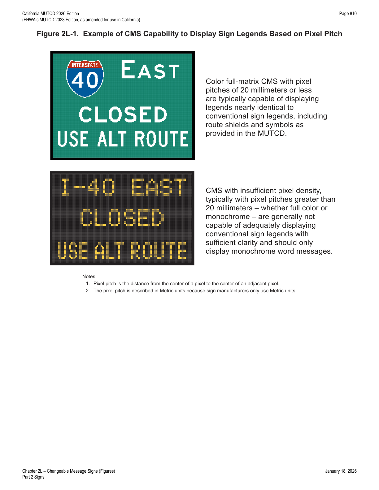

Part 2 · Signs · Chapter 2L
Changeable Message Signs
Design and application rules for permanent and portable electronic-display signs (CMS/PCMS) — allowable message types, legibility and phasing limits, message construction principles, travel time and safety campaign messaging, and Caltrans' AMBER Alert policy.
2L.01Description of Changeable Message Signs
Support — Background/Explanatory
- 01A changeable message sign (CMS) is a traffic control device that is capable of displaying one or more alternative messages. Some CMS have a blank mode when no message is displayed, while others display multiple messages with only one of the messages displayed at a time (such as OPEN/CLOSED signs at weigh stations).
- 02The provisions in this Chapter apply to both permanent (fixed) and portable changeable message signs with electronic displays or the electronic display portion of an otherwise conventional static sign. Additional provisions that only apply to portable changeable message signs (PCMS) can be found in Section 6L.05. The provisions in this Chapter generally do not apply to CMS with non-electronic displays that are changed either manually or electromechanically, such as a hinged-panel, rotating-drum, or back-lit curtain or scroll CMS.
- 03The CMS is a traffic control device at all times regardless of the type of message being displayed. Accordingly, the limitations on design, format, and manner of display of a message conveyed on a conventional sign apply to CMS regardless of the type of message being displayed at any given time. Some of the general provisions regarding traffic control devices are reiterated in this Chapter. However, this Chapter is not an independent or stand-alone reference for CMS. Users of CMS are expected to consult the other chapters in this Manual for criteria on how to develop effective messages that comply with this Manual and that meet the expectancy and limitations of the road user. In this regard, the engineering processes applied to decisions about whether to use a particular sign, for example, are no different for the decisions about the type and content of the message under consideration for display on a CMS. The other limited-use messages allowed on CMS as provided for in this Chapter likewise fall under the same MUTCD provisions as the primary-use traffic operation regulatory, warning, and guidance messages except as stated otherwise in this Chapter.
- 04CMS messaging can be subject to habituation, a phenomenon by which repeated exposure to a stimulus results in diminished response. CMS habituation can occur through repeated exposure to messages, especially those messages that might not be perceived as having relevance to the road user, resulting in diminished responsiveness of the road user to that message. Because messages can be changed or extinguished, the effectiveness of CMS is tied more to the messages displayed thereon, the frequency of displayed messages, and the relevance to the road user, rather than to the installation of the signs themselves.
Guidance — Recommended Practice
- 05Changeable message signs should be used judiciously to avoid habituation and preserve their effectiveness during the display of real-time messages about traffic conditions or traffic advisories.
Standard — Mandatory Requirement
- 06The design of legends for non-electronic display CMS shall comply with the provisions of Chapters 2A through 2K, 2M, and 2N of this Manual. Other CMS shall comply with the design and application principles established in this Chapter, Chapter 2A, and provisions elsewhere in this Manual for specific signs.
- 07No items other than inventory or maintenance-related information (see Section 2A.04) shall be displayed on the front or back of a CMS or portable CMS. Names or logos of the manufacturer, brand, or model shall not be displayed on a CMS or portable CMS, either in the message display itself or on the exterior housing.
Guidance — Recommended Practice
- 08Blank-out signs that display only single-phase, predetermined electronic-display legends that are limited by their composition and arrangement of pixels or other illuminated forms in a fixed arrangement (such as a blank-out sign indicating a part-time turn prohibition, a blank-out or changeable lane-use sign, or a changeable OPEN/CLOSED sign for a weigh station) should comply with the provisions of the applicable Section for the specific type of sign, provided that the letter forms, symbols, and other legend elements are duplicates of the conventional messages as detailed in the "Standard Highway Signs" publication (see Section 1A.05). Because such a sign is effectively an illuminated version of a conventional sign, the size of its legend elements, the overall size of the sign, and the placement of the sign should comply with the applicable provisions for the conventional version of the sign.
2L.02Applications of Changeable Message Signs
Standard — Mandatory Requirement
- 01CMS shall display only traffic operational, regulatory, warning, and guidance information except as otherwise provided in this Chapter. Advertising or other messages not related to traffic control shall not be displayed on a CMS or on its supports or other equipment.
Option — Permissive
- 02CMS may display traffic safety campaign messages (see Section 2L.07), transportation-related messages, emergency homeland security messages, and America's Missing: Broadcast Emergency Response (AMBER) alert messages, all as provided for in this Chapter.
- 03Transportation-related messages for the purpose of improving traffic conditions, such as those providing information on alternative means of transportation, electronic toll collection, or carpooling may be displayed to remind or inform drivers of relevant options or opportunities for transportation.
Support — Background/Explanatory
- 04Messages regarding broader transportation items not related to improving traffic conditions, such as reminders of driver's license or vehicle registration renewal, vehicle recall information, and vehicle maintenance, do not meet the purpose of a transportation-related message.
- 05Examples of transportation-related messages include "STADIUM EVENT SUNDAY, DELAYS NOON TO 4 PM" and "OZONE ALERT—USE TRANSIT."
Guidance — Recommended Practice
- 06A CMS should not be used to display a transportation-related message if doing so could adversely affect respect for the sign. "CONGESTION AHEAD" or other overly simplistic or vague messages should not be displayed alone. These messages should be supplemented with a message on the location or distance to the congestion or incident, delay and travel time, alternative route, or other similar messages.
- 07CMS should not be used in place of conventional signs for conditions that do not change, except for blank-out type signs used to display regulatory, warning, and guidance information that routinely reoccurs, but only on a part-time basis. Similarly, when only certain elements of a message on a non-changeable sign are subject to change, only those elements of the sign should be in an electronic display — for example, the prices shown on the R3-48 and R3-48a signs (see Figure 2G-18).
Support — Background/Explanatory
- 08The purpose of CMS is to provide real-time traffic regulatory, warning, or guidance messages for: incident management and route diversion; warning of adverse roadway travel conditions due to weather; special event applications associated with traffic control or conditions; lane, ramp, and roadway control; priced or other types of managed lanes; travel times; warning situations; traffic regulations; speed control or warning; variable destination guidance; supporting temporary traffic control; or Active Traffic Management.
- 09CMS provide significant flexibility and capability in communicating many types of real-time traffic control messages to road users. While their intended purpose is the display of traffic regulatory, warning, or guidance information, other limited uses are also allowed under certain conditions, as provided in this Chapter. Their integrity as an official traffic control device rests significantly on their judicious use and proper messaging format and content, regardless of the message type being displayed.
Standard — Mandatory Requirement
- 10State and local highway agencies that have permanently-installed (fixed) or positioned (portable) CMS shall issue and maintain a policy regarding the use and display of all types of messages to be used on their CMS. The policy shall define the types of messages that will be allowed, the priority of messages, the proper syntax of messages, the timing of messages, and other important messaging elements to ensure messages displayed meet the basic principles that govern the design and use of traffic control devices in general (see Section 1D.01) and traffic signs in particular as provided for in this Manual.
Guidance — Recommended Practice
- 11State and local agencies that use CMS, but do not have permanently-installed (fixed) or positioned (portable) signs, should develop and establish a policy as discussed in Paragraph 10 of this Section.
- 12When CMS are used at multiple locations to address a specific situation, the message displays should be consistent along the roadway corridor and adjacent corridors, which might necessitate coordination among different operating agencies.
- 13AMBER alerts (see Paragraph 2 of this Section), when displayed, should not preempt messages related to traffic or travel conditions. AMBER alert messages should be kept as brief as possible and, when possible, direct road users to another source, such as broadcast or highway advisory radio, for detailed information about the alert.
Standard — Mandatory Requirement
- 14Types of "alert" messages other than AMBER alerts that are unrelated to traffic or travel conditions shall not be displayed on CMS.
- 15The format of CMS displays shall not be of a type that could be considered similar to advertising or promotional displays.
Support — Background/Explanatory
- 16In times of a declared state of emergency, it might be appropriate to display messages related to evacuation, homeland security, or emergency information. Traffic patterns, movement, or other situations might be atypical due to the emergency, necessitating unique messaging not specifically related to traffic conditions.
Standard — Mandatory Requirement
- 17Homeland security and emergency messages shall only be displayed in declared states of emergency when there is an imminent threat to the general population. Generic security or personal safety messages shall not be displayed when there is no context of a declared state of emergency or known imminent national security threat. Homeland security and emergency messages shall not be promotional or advisory in nature, including the message design, layout, or manner of display.
Guidance — Recommended Practice
- 18Homeland Security and emergency messages should undergo significant levels of scrutiny prior to being approved for broadcast to ensure accuracy and consistency with emergency conditions. These messages should be designed to convey a clear and simple meaning in a similar format to traffic control messages.
Support — Background/Explanatory
- 19Section 2B.21 contains information regarding the design of CMS that are used to display variable speed limits that change based on ambient or operational conditions on the Variable Speed Limit (R2-1) sign.
- 20Section 2C.13 contains information regarding the design of CMS that are used to display the speed at which approaching vehicles are traveling on the Vehicle Speed Feedback (W13-20 and W13-20aP) sign and plaque.
- 21Section 2H.04 contains information regarding the design of CMS that are used to display variable speeds for traffic signal progression on the Traffic Signal Speed (I1-1) sign.
- 22Section 5B.01 contains provisions for LEDs used in electronic-display signs to accommodate driving automation systems.
Caltrans' Policy Regarding the Use of CMS for AMBER Alert Messages on State Highways
Support — Background/Explanatory
- 23A primary mission of Caltrans is the safe and orderly movement of traffic. It is the policy of Caltrans to display only real-time information that conveys current traffic safety and congestion information on CMS.
Standard — Mandatory Requirement
- 24An exception to Caltrans policy on the use of CMS shall be made only for AMBER Alerts. Only credible real-time information, where it is crucial to the safety of the victim to disseminate the information to the public in the near term, shall be displayed on these CMS.
Support — Background/Explanatory
- 25Law enforcement activates an AMBER Alert when circumstances meet the following criteria: the person is confirmed missing; the law enforcement agency believes the person has been kidnapped; the agency believes the missing person is under threat of serious bodily harm or death.
Standard — Mandatory Requirement
- 26The California Highway Patrol (CHP) shall consult with the investigating agency prior to requesting any CMS activation. Caltrans shall only respond to AMBER alert requests from the CHP. Caltrans' District Traffic Management Center (TMC) staff and local CHP staff shall jointly agree upon the most appropriate CMS message content(s). The TMC staff shall also consult with CHP staff regarding the length of time to display messages (initially 2–3 hours), and extent of roadway system to display the messages (i.e., radius and/or directions and specific routes).
Guidance — Recommended Practice
- 27TMC personnel should discuss with CHP the limitations on message content, the number of signs that can be deployed within a given time period, conflicts with other necessary sign messages, etc.
Support — Background/Explanatory
- 28There is a concern that messages that are too general in describing vehicles might result in inappropriate vigilantism. The preferred response is to display a radio frequency (thus referring the public elsewhere for details) — Caltrans' Highway Advisory Radios (HAR) or appropriate commercial radio. Alternatively, a license plate number (or partial number) might be displayed along with a vehicle description. The display of any contact phone number is not allowed.
- 29Nothing in this policy suggests a requirement to pre-empt true road user safety messages, e.g., unexpected "end of queue" motorist alerts, severe weather advisories (fog, smoke), road closure and detour information, etc.
Option — Permissive
- 30It may be necessary to turn off an AMBER alert message that creates a traffic hazard.
Support — Background/Explanatory
- 31This policy primarily applies to the use of fixed CMS. Should the use of portable CMS be necessary and appropriate at a specific location(s), Caltrans can expect CHP assistance with portable CMS deployment as needed.
Guidance — Recommended Practice
- 32The TMCs should notify Caltrans' HQ Communications Center when responding to an AMBER alert request. The TMCs should monitor and save traffic data to determine if unintended consequences of displaying such a message occurred on the highway.
Standard — Mandatory Requirement
- 33A joint debriefing of Caltrans and CHP staff shall follow every event.
- 34In all cases, messages shall maintain the credibility of the CMS.
In practice: the Caltrans AMBER Alert policy is the sole authorized exception to California's otherwise strict "real-time traffic information only" CMS policy — every other use case in this Section (transportation-related messages, safety campaigns) is a national MUTCD option layered on top of a more restrictive state baseline.
2L.03Legibility and Visibility of Changeable Message Signs
Support — Background/Explanatory
- 01The maximum distance at which a driver can first correctly identify letters and words on a sign is called the legibility distance of the sign. Legibility distance is affected by the characteristics of the sign design and the visual capabilities of drivers. Visual capabilities, and thus legibility distances, vary among drivers.
- 02For the more common types of CMS, the longest measured legibility distances on sunny days occur during mid-day when the sun is overhead. Legibility distances are much shorter when the sun is behind the sign face, when the sun is on the horizon and shining on the sign face, or at night.
- 03Visibility is the characteristic that enables a CMS to be seen. Visibility is associated with the point where the CMS is first detected, whereas legibility is the point where the message on the CMS can be read. Environmental conditions such as rain, fog, and snow impact the visibility of CMS and can reduce the available legibility distances. During these conditions, there might not be enough viewing time for drivers to read the message.
Guidance — Recommended Practice
- 04CMS used on roadways with speed limits of 55 mph or higher should be visible from ½ mile under both day and night conditions. The message should be designed to be legible from a minimum distance of 600 feet for nighttime conditions and 800 feet for normal daylight conditions. When environmental conditions that reduce visibility and legibility are present, or when the legibility distances stated above cannot be practically achieved, messages composed of fewer units of information should be used and consideration should be given to limiting the message to a single phase (see Section 2L.05 for information regarding the lengths of messages displayed on CMS).
- 05The electronic display of standardized regulatory and warning signs used individually or as part of the legend for a larger sign should meet the size and legend requirements for those specific signs in Chapters 2B and 2C.
2L.04Design Characteristics of Messages
Standard — Mandatory Requirement
- 01Except as provided in Paragraph 2 of this Section, messages shall not include animation, flashing, dissolving, exploding, scrolling, or other dynamic display elements.
- 02When a portable CMS is used as an arrow board that uses a flashing or sequential display for a lane or shoulder closure, the display and operation shall be considered that of an arrow board and shall comply with the provisions of Sections 6L.05 and 6L.06.
Guidance — Recommended Practice
- 03In developing messages for display on CMS, the provisions of Section 1D.01 should be consulted for the principles of an effective traffic control device.
Standard — Mandatory Requirement
- 04All message displays on CMS, whether for traffic operational, regulatory, warning, or guidance information, or for the other allowable message types as defined in this Chapter, shall follow the same design and display principles found in this Manual used for other traffic control signs, except as provided elsewhere in this Chapter.
Guidance — Recommended Practice
- 05Except in the case of a limited-legend CMS (such as a blank-out or a part-time regulatory sign display) that is used in place of a conventional regulatory sign or an activated blank-out warning sign that supplements a conventional warning sign at a separate location, the signs should be used as a supplement to and not as a substitute for conventional signs and markings unless otherwise provided for in this Manual.
Support — Background/Explanatory
- 06When CMS are overused for messages not directly associated with real-time driving conditions, road users might pay less attention to the sign, thereby limiting their effectiveness as traffic control devices.
Guidance — Recommended Practice
- 07Warning Beacons (see Section 4S.03) should not be installed on CMS; rather, CMS should be used predominately to display messages that are critical to real-time travel conditions. CMS word messages should be limited to no more than three lines, with no more than 20 characters per line.
- 08The spacing between characters in a word should be between 25 and 40 percent of the letter height. The spacing between words in a message should be between 75 and 100 percent of the letter height. Spacing between the message lines should be between 50 and 75 percent of the letter height (see Table 2L-1).
- 09Except as otherwise provided in this Manual, word messages on CMS should be composed of all upper-case letters. The minimum letter height should be 18 inches for CMS on roadways with speed limits of 45 mph or higher. The minimum letter height should be 12 inches for CMS on roadways with speed limits of less than 45 mph. When a message is composed of two phases and higher informational load (see Section 2L.05), the letter height should be 18 inches, regardless of the speed limit, to optimize legibility distance and available viewing time.
Option — Permissive
- 10CMS used to replicate a conventional sign may use the character size of the conventional sign being replicated.
Support — Background/Explanatory
- 11Using letter heights of more than 18 inches will not result in proportional increases in legibility distance.
Guidance — Recommended Practice
- 12The width-to-height ratio of the sign characters should be between 0.7 and 1.0. The stroke width-to-height ratio should be 0.2.
Support — Background/Explanatory
- 13The width-to-height ratio is commonly accomplished using a minimum font matrix density of five pixels wide by seven pixels high.
Standard — Mandatory Requirement
- 14CMS shall automatically adjust their brightness under varying light conditions to maintain legibility.
Guidance — Recommended Practice
- 15The luminance design of a CMS should meet industry criteria for daytime and nighttime conditions. Luminance contrast design should be between 8 and 12 for all conditions.
Support — Background/Explanatory
- 16CMS maintenance and replacement practices might need to account for the reduction of LED luminance and luminance contrast that occurs naturally over time and might substantially impact legibility.
Guidance — Recommended Practice
- 17Contrast orientation of CMS should always be positive, that is, with luminous characters on a dark or less-luminous background.
Support — Background/Explanatory
- 18Legibility distances for negative-contrast CMS are likely to be at least 25 percent shorter than those of positive-contrast messages. In addition, the increased light emitted by negative-contrast CMS has not been shown to improve detection distances and might visually overwhelm the darker characters of the sign legend.
Standard — Mandatory Requirement
- 19The colors used for the legends and backgrounds on CMS shall be as provided in Table 2A-2 and Table 2A-2(CA).
- 20Except as provided in Paragraph 21 of this Section, if a black background is used, the color used for the legend on a CMS shall match the background color that would be used on a standard sign for that type of legend as specified in Table 2A-2 and Table 2A-2(CA).
Option — Permissive
- 21CMS that use only yellow or amber LEDs may display a yellow or amber legend that does not match the background color used on a standard sign for that type of legend as specified in Table 2A-2 and Table 2A-2(CA).
Standard — Mandatory Requirement
- 22If a green background is used for a guide message on a CMS or if a blue background is used for a motorist services message on a CMS, the background color shall be provided by green or blue lighted pixels such that the entire CMS would be lighted, not just the white legend.
Support — Background/Explanatory
- 23Some CMS that employ newer technologies have the capability to display a near duplicate of a standard sign or other sign legend using standard symbols, the Standard Alphabets and letter forms, route shields, and other typical sign legend elements with no apparent loss of resolution or recognition to the road user when compared with a conventional version of the same sign legend. Such signs are of the full-matrix type and can typically display full-color legends. Figure 2L-1 shows comparative examples of the effects of varying pixel densities on legend form.
Guidance — Recommended Practice
- 24If used, the CMS described in Paragraph 23 of this Section should not display symbols or route shields unless they can do so in the appropriate legend and background color combinations. Where an LED matrix is used to form the changeable legend, signs with pixel spacing greater than 20 millimeters should display only word legends and no symbols or route shields.
- 25For a single-phase message where the Standard Alphabets and other legend elements of standard designs are used, the lettering style, size, and line spacing should comply with the applicable provisions for the type of message displayed as provided elsewhere in this Manual. For two-phase messages, larger legend heights should be used as described previously in this Section because of the need for such messages to be legible at a greater distance. Regardless of the number of phases, the CMS should comply with the legibility and visibility provisions of Section 2L.03.

2L.05Message Length and Units of Information
Guidance — Recommended Practice
- 01The maximum length of a message should be dictated by the number of units of information contained in the message, in addition to the size of the CMS. A unit of information, which is a single answer to a single question that a driver can use to make a decision, should not be more than four words.
Support — Background/Explanatory
- 02In order to illustrate the concept of units of information, Table 2L-2 shows an example message that is comprised of four units of information.
- 03The maximum allowable number of units of information in a CMS message is based on the principles described in this Section, the current highway operating speed, the legibility characteristics of the CMS, and the lighting conditions.
Standard — Mandatory Requirement
- 04Each message shall consist of no more than two phases. A phase shall consist of no more than three lines of text. Each phase shall be understood by itself, and the meaning of the entire message shall be the same, regardless of the sequence in which the phases are read. Each line of legend shall be centered on the sign. Except for signs located on toll plaza structures or other facilities with a similar booth-lane arrangement, if more than one CMS is visible to road users, then only one sign shall display a sequential message at any given time.
Option — Permissive
- 05A legend on a CMS that replicates a legend on a conventional sign that would not normally be center justified may be left justified or right justified as appropriate, such as a travel time or a variable rate toll display.
Standard — Mandatory Requirement
- 06Abbreviations displayed on CMS shall comply with the provisions of Section 1D.08.
Guidance — Recommended Practice
- 07When designing and displaying messages on CMS, the following principles should be used: (A) the minimum time that an individual phase is displayed should be based on 1 second per word or 2 seconds per unit of information, whichever produces a lesser value — the display time for a phase should never be less than 2 seconds; (B) the maximum cycle time of a two-phase message should be 8 seconds; (C) the duration between the display of two phases should not exceed 0.3 seconds; (D) no more than three units of information should be displayed in a message phase; (E) no more than four units of information should be in a message when the traffic operating speeds are 35 mph or more; (F) no more than five units of information should be in a message when the traffic operating speeds are less than 35 mph; (G) only one unit of information should appear on each line of the CMS.
Support — Background/Explanatory
- 08Table 2L-2 provides an example of the number of units of information in a message.
Option — Permissive
- 09A unit of information consisting of more than one word may be displayed on more than one line. An additional CMS at a downstream location may be used for the purpose of allowing the entire message to be read twice.
- 10If more than two phases would be needed to display the necessary information, additional CMS may be used to display this information as a series of two distinct, independent messages with a maximum of two phases at each location, in accordance with Paragraph 4 of this Section.
Support — Background/Explanatory
- 11Tables 2L-3 and 2L-4 provide examples of message construction for CMS. Each example shows the message content, layout, and phasing for a potential message and an improved message. The improved message for each example has been optimized for recognition, comprehension, and effectiveness.
| Height of Letters Used on CMS | Spacing between Characters in Words | Horizontal Spacing between Words | Vertical Spacing between Lines of Text |
|---|---|---|---|
| 12 | 3 – 5 | 9 – 12 | 6 – 9 |
| 18 | 4½ – 7 | 13½ – 18 | 9 – 13½ |
| Question | Answer | Number of Information Units |
|---|---|---|
| What happened? | MAJOR CRASH | 1 |
| Where? | AT EXIT 12 | 1 |
| Who is the advisory for? | Drivers heading TO NEW YORK | 1 |
| What is advised? | USE ROUTE 46 | 1 |
Resulting two-phase message — Phase 1: MAJOR CRASH / AT EXIT 12. Phase 2: USE ROUTE 46 / TO NEW YORK.
| Example | Potential Message | Improved Message | Comments |
|---|---|---|---|
| 1 — Diversionary | Phase 1: EXIT 10 CLOSED / Phase 2: USE EXIT 12 | Phase 1: EXIT 10 CLOSED / Phase 2: USE EXIT 12 | Each message phase should convey a complete thought independent of the other; the entire message should make sense regardless of which phase is read first. |
| 2 — Advance warning | Phase 1: ROADWORK AHEAD / Phase 2: CAUTION CAUTION CAUTION | Phase 1: ROAD WORK AHEAD (single phase) | Condensing ROAD and WORK is unnecessary; a general CAUTION message is not actionable; messages should not repeat to fill the sign; Phase 2 can be eliminated without loss of meaning. |
| 3 — Advance warning | Phase 1: RIGHT LANE CLOSED / Phase 2: 1 MILE | RIGHT LANE CLOSED 1 MILE (single phase) | A single-phase message reduces the time necessary to read and glance away from the road; the second phase alone did not provide a complete message. |
| 4 — Advance warning | RT LN CLSD 1 MI | RIGHT LANE CLOSED 1 MILE (single phase) | Less-common abbreviations (Table 1D-2) are unwarranted when the sign can accommodate the full message; such abbreviations should be reserved for portable CMS with limited characters per line. |
| 5 — Directional | 9TH AVENUE SOUTHWEST / KEEP RIGHT | 9TH AVE SW KEEP RIGHT (single phase) | Conventional street-name abbreviations (Table 2D-3) improve recognition and reduce apparent legend length. |
| 6 — Diversionary | EXPWY CONGESTED USE 101 FOR AIRPORT | US 19 CONGESTED / AIRPORT USE EXIT 101 | Lack of an expressway route number is vague to unfamiliar road users; adding the exit number for the diversion route simplifies the message. |
| 7 — Travel time | TRAVEL TIME TO I-89 13 MINUTES | I-89 JCT 12 MILES 13 MINS (single phase) | The "TRAVEL TIME" legend is extraneous and out of context for a distance message; changing only one line of legend between phases compromises recognition. |
| 8 — Safety campaign | SEAT BELTS SAVE LIVES / STATE LAW | FASTEN SEAT BELTS (single phase) | Slogan-type messages do not convey the legal requirement; as an alternative, eliminate "STATE LAW" and display the fine for violations on a second phase. |
| 9 — Regulatory | DONT TEXT JUST DRIVE | NO HAND-HELD PHONE BY DRIVER (single phase) | Slogan-type messages do not convey the legal requirement; Phase 2 can be eliminated without loss of meaning to Phase 1. |
| Example | Potential Message | Improved Message | Comments |
|---|---|---|---|
| 1 — Diversionary | Phase 1: EXIT 10 CLOSED / Phase 2: USE EXIT 12 | Phase 1: EXIT 10 CLOSED / Phase 2: USE EXIT 12 | Each phase conveys a complete thought. |
| 2 — Advance warning | ROADWORK AHEAD / CAUTION CAUTION CAUTION | ROAD WORK AHEAD (single phase) | Condensing ROAD and WORK is unnecessary; CAUTION alone is not useful; message should not repeat; Phase 2 can be eliminated. |
| 3 — Advance warning | RIGHT LANE CLOSED / 1 MILE | RIGHT LN CLOSED 1 MILE (single phase) | Two-phase separation is unnecessary; the second phase alone does not provide a complete message. |
| 4 — Advance warning | RT LN CLSD 1 MI | RIGHT LN CLOSED 1 MILE (single phase) | Less-common abbreviations are unwarranted when the sign can accommodate the full message. |
| 5 — Directional | 9TH AVENUE SW / KEEP RIGHT | 9 AVE SW KEEP RIGHT (single phase) | Conventional street-name abbreviations improve recognition and reduce apparent legend length. |
| 6 — Advance warning | ROAD WORK / NEXT 3 MILES | ROADWORK NEXT 3 MILE (single phase) | Condensing ROAD and WORK into a single word (Table 1D-2) accommodates a single-phase message. |
| 7 — Safety campaign | SEAT BELTS / SAVE LIVES STATE LAW | FASTEN SEAT BELTS (single phase) | Slogan-type message does not convey the legal requirement; as an alternative, eliminate STATE LAW and display the fine on a second phase. |
| 8 — Regulatory | DONT TEXT / JUST DRIVE | NO HAND-HELD PHONE BY DRIVER (single phase) | Slogan-type message does not convey the legal requirement. |
2L.06Travel Time Messages
Support — Background/Explanatory
- 01Travel times provide road users useful information about the level of congestion on segments of highways where motorists experience frequent incidents that slow traffic. Travel times are only helpful to the road user if they have a general understanding of the length of the road segment the travel time is related to so that they can compare that to the time it takes them to travel a similar distance on a highway without congestion. However, travel time messages require road users to read and process a significant amount of information and careful consideration is needed to ensure the overall message is not overloading the motorist.
Guidance — Recommended Practice
- 02Travel times should be tied to the distance to a particular destination or junction so that road users can estimate the level of congestion based on the time to travel that distance. When travel times are displayed on CMS, such as during peak traffic conditions, the message should comply with the provisions of Sections 2E.49 and 2E.50. If both a travel time and a distance are displayed, the sign should display only one destination. A distance displayed as part of a travel time message should be rounded to the nearest whole mile.
Option — Permissive
- 03When comparative travel time displays are used providing travel times on different routes to one destination, distances to that destination may be eliminated.
- 04A reference-location-based exit number (see Section 2E.22) may be displayed in lieu of a destination name or junction thereby providing the necessary distance information to the road user. If reference-location-based exit numbers are displayed, then up to two travel times may be displayed provided that the distance to the exit is not also displayed.
2L.07Traffic Safety Campaign Messages
Support — Background/Explanatory
- 01An allowable ancillary use of CMS is the display of traffic safety messages in conjunction with a traffic safety campaign that includes other forms of media as the primary communication and education mechanism.
Standard — Mandatory Requirement
- 02Traffic control messages shall have priority over traffic safety campaign messages.
Guidance — Recommended Practice
- 03When a CMS is used to display a traffic safety campaign, the message should be simple, direct, brief, legible, and clear (see Section 1D.01). Traffic safety campaign messages should be relevant to the road user on the roadway on which the message is displayed. For example, messages regarding school bus stop safety should not be displayed on freeways where school bus stops are not found.
- 04A CMS should not be used to display a traffic safety campaign message if doing so could adversely affect respect for the sign. Messages with obscure or secondary meanings, such as those with popular culture references, unconventional sign legend syntax, or that are intended to be humorous, should not be used as they might be misunderstood or understood only by a limited segment of road users and require greater time to process and understand. Similarly, slogan-type messages and the display of statistical information should not be used.
- 05The broad traffic safety campaign marketing message should be appropriately shortened or otherwise modified to comply with the provisions of Section 2L.05 when a traffic safety campaign message is displayed on a CMS.
- 06Traffic safety campaign messages should emphasize the applicable regulation or warning and should reference any penalties associated with violations of the regulation. Traffic safety campaigns using CMS should include coordinated enforcement efforts where penalties or enforcement type warnings are part of the message displayed on the CMS.
- 07Traffic safety campaign messages should not be displayed on CMS unless they are part of an active, coordinated safety campaign that uses other media forms as the primary means of outreach. For consistency on a national level, traffic safety campaigns should be coordinated with those on the National Highway Transportation Safety Administration's annual communications calendar.
Support — Background/Explanatory
- 08Examples of traffic safety campaign messages include "UNBUCKLED SEAT BELTS FINE + POINTS" and "IMPAIRED DRIVERS LOSE LICENSE + JAIL."
2L.08Permanently-Located (Fixed) Changeable Message Signs
Support — Background/Explanatory
- 01Careful consideration of CMS installation location is important to having a safe and effective message, taking into account several factors. CMS message length and complexity will vary and often include two-phase displays, all of which might require longer glance times by motorists than would be required for conventional sign messages.
- 02Permanently-located (Fixed) CMS (FCMS) are generally used on higher-speed, multi-lane facilities with high traffic volumes where more time might be required to properly respond to a message, such as by changing lanes or reducing speed. It also is common for other signs to be in the same vicinity of the desired location for a FCMS, raising the concern of overloading road users with information.
Guidance — Recommended Practice
- 03A CMS that is used in place of a conventional sign (such as a blank-out or variable legend regulatory sign) should be located in accordance with the provisions of Chapter 2A and the provisions for the conventional sign it replaces.
- 04Permanently-located (Fixed) CMS (FCMS) should: (A) be located sufficiently upstream of known bottlenecks and high crash locations to enable road users to select an alternate route or take other appropriate action in response to a recurring condition; (B) be located sufficiently upstream of major diversion decision points, such as interchanges, to provide adequate distance over which road users can change lanes to reach one destination or the other; (C) not be located within an interchange except for toll plazas or managed lanes; (D) not be positioned at locations where the information load on drivers is already high because of guide signs and other types of information; and (E) not be located in areas where drivers frequently perform lane-changing maneuvers in response to guide sign information, or because of merging or weaving conditions.
Support — Background/Explanatory
- 05Many of the factors in locating permanently-located (Fixed) CMS (FCMS) apply to PCMS. Information regarding the design and application of PCMS in temporary traffic control zones is contained in Section 6L.05.
2L.101(CA)Extinguishable Message Signs
Support — Background/Explanatory
- 01Extinguishable message signs are designed to have one or more messages that can be displayed or deleted as required. Such a sign can be changed manually, by remote control, or by automatic controls that can "sense" the conditions that require special sign messages.
- 02It is recognized that due to technological limitations, many extinguishable message signs cannot conform to the exact sign shape, color, and dimensions specified in these standards. Nevertheless, it is essential that extinguishable message signs ascribe to the principles established in this California MUTCD, and to the extent practicable, with the design and applications prescribed herein.
★ Key Takeaways — Chapter 2L
- A CMS is a traffic control device at all times — the same design/placement rules that apply to a conventional sign apply to whatever message a CMS is currently displaying, and it may never carry manufacturer branding or advertising.
- Message construction is tightly bounded: maximum 2 phases, 3 lines per phase, 20 characters per line; minimum display time is 1 sec/word or 2 sec/unit of information (never less than 2 sec), 8-second max cycle time, 0.3-second max transition; units of information are capped at 3 per phase, 4 total at ≥35 mph, 5 total below 35 mph.
- Minimum letter height is 18 in. at ≥45 mph (also required for any 2-phase, high-load message regardless of speed) and 12 in. below 45 mph; CMS must auto-adjust brightness and use positive contrast (light characters on dark background).
- Allowed non-operational message types are narrowly limited to traffic safety campaigns (subordinate to traffic control messages), transportation-related reminders, declared-emergency homeland security messages, and AMBER Alerts — never generic alerts, slogans, or humor.
- California layers a stricter baseline on top of the national rules: Caltrans CMS display only real-time traffic/congestion information as a matter of policy, with AMBER Alerts as the sole exception, requiring CHP-initiated requests, joint TMC/CHP message approval, and a mandatory post-event debrief.